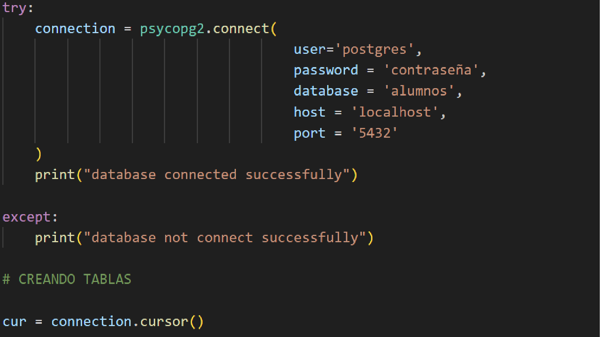
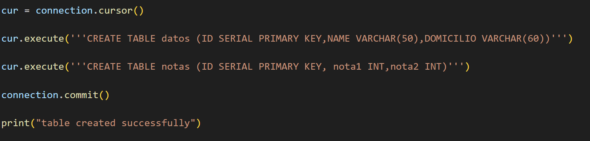
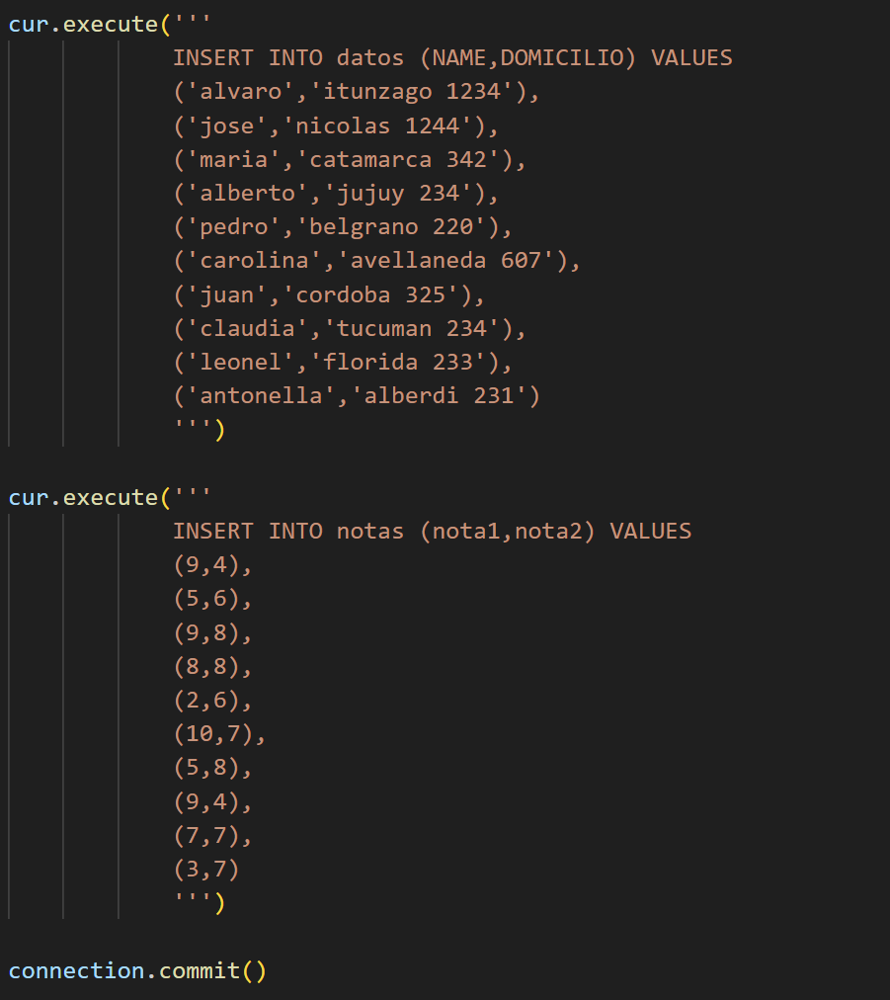
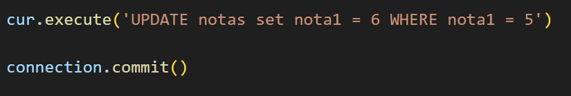
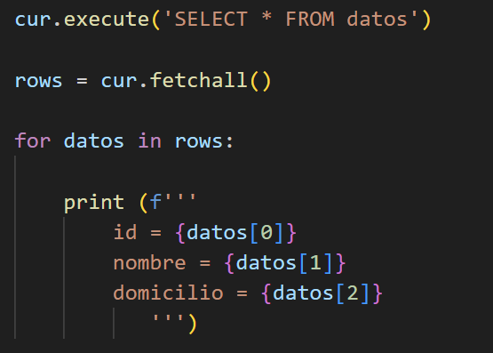
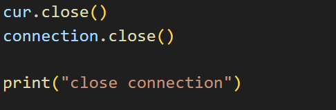

PostgreSQL es un sistema de gestión de bases de datos relacional de código abierto, conocido por su robustez, escalabilidad y cumplimiento con los estándares SQL.
Pgadmin es una interfaz grafica propía de postgresql que nos ayudara a crear o gestionar nuestra base de datos.
Si bien nosotros podemos gestionar la base de datos mediante su intefaz grafica comdamente, tambien podemos hacerlo a traves de el lenguaje de python. Para lograr esto debemos primero de instalar una libreria que nos ayudara a conectarnos con la BDD.
Para instalar la libreria debemos de ir a nuestra terminal donde ingresaremos lo siguiente.
pip install psycopg2NOTA: personalmente prefiero crear un entorno virtual antes de instalar dicha libreria para evitar algunos errores.
Para poder controlar nuestr base de datos con python debemos de realizar primero una conexion de la siguiente manera:
Al crear la tabla debemos de definir nuestros campos, asi como tambien sus propiedades
Al ingresar datos, debemos de nombrar los campos y luego los valores que ingresaremos
Tambien podemos actualizar datos particulares
con la siguiente forma podremos traer y mostrar datos de nuestra base datos
Como toda conexion que se abre, tambien se debe de cerrar
